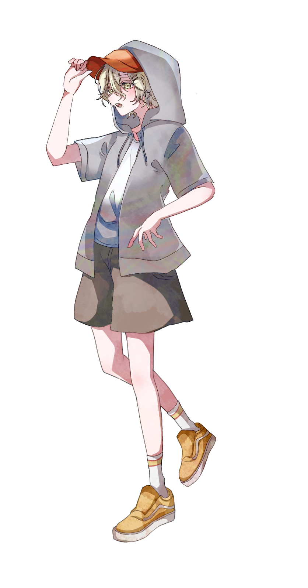

明るく社交的な性格で、場の空気を和ませることが得意。 一方で非常に怖がりな一面があり、特に幽霊や心霊現象などの ホラー・オカルト系を大の苦手としている。
幼なじみである相方PCとは家が近く、二歳年上の相方PCを いつも先を行く「憧れの兄貴分」のように見ている。 小学生の頃から一緒に遊んでいたため、実際の年齢差ほど 相手を年上として意識することはなく、自然な距離感で接している。
根っからのネット世代で、小学生の頃に実況動画にハマったことを きっかけに、自分もいつか動画を作る側になりたいと思うようになった。 ただし、ホラー・オカルト・心霊系だけは別格で苦手としており、 夏の怪談番組を見ただけで泣き出し、トイレに行けなくなるほどの怖がりである。
大学入学後、相方PCから「YouTubeやってみない？」と誘われ、 これまで見ていた動画がゲーム実況に偏っていたこともあり、 ゲーム実況チャンネルを始めるものだと思って承諾した。 しかし、実際に始まったのは本格的なオカルト取材チャンネルだった。
当初は毎回のように怖がり、悲鳴を上げていたものの、 そのリアクションが視聴者から「面白い」と評判になり、 次第に人気を集めるようになる。 「茉昼くんの悲鳴が安心する」「この人だけ本気で怖がってるの草」 といったコメントが寄せられるほどで、本人としては不本意ながらも チャンネルを完全にやめづらい状況になっている。
相方PCが大学進学を機に実家を出て一人暮らしを始めた際には、 「これでようやくオカルトから離れられる」と思っていた。 しかし、二年間離れて暮らしてみると、思っていた以上に寂しさを 感じるようになる。
そこで「その大学に行きたい」という口実を作り、相方PCの家に 転がり込むことになる。もともと相方PCは生活力に乏しいタイプでもあり、 放っておけないという気持ちも強かった。 結局のところ、怖いものから離れるためではなく、 大切な幼なじみのそばにいるために、自らその生活を選んでいる。